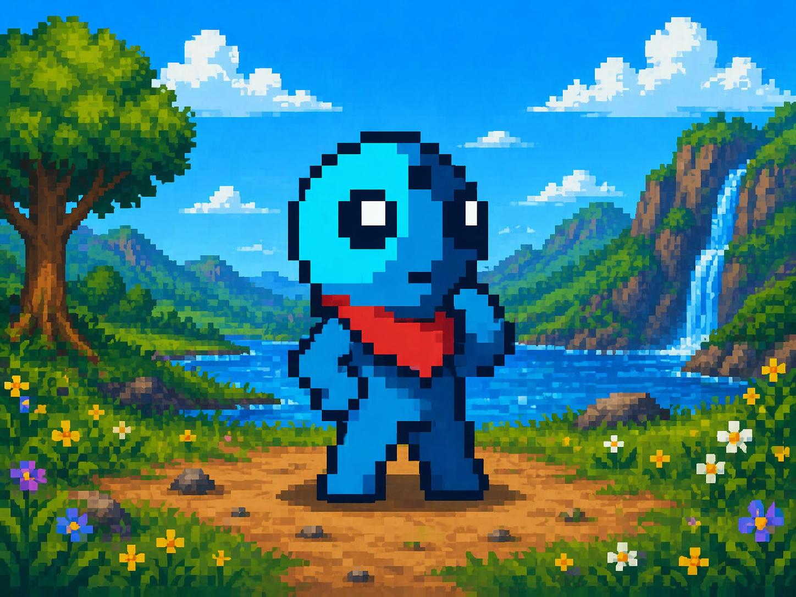
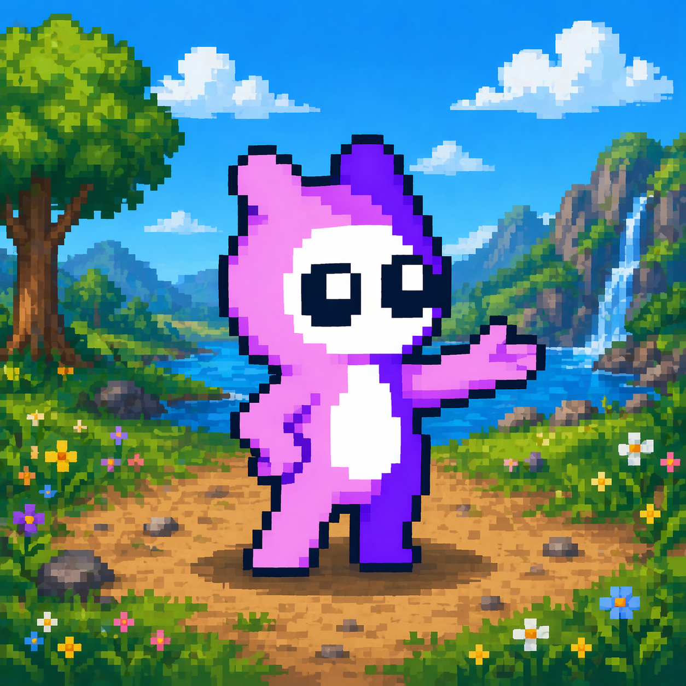
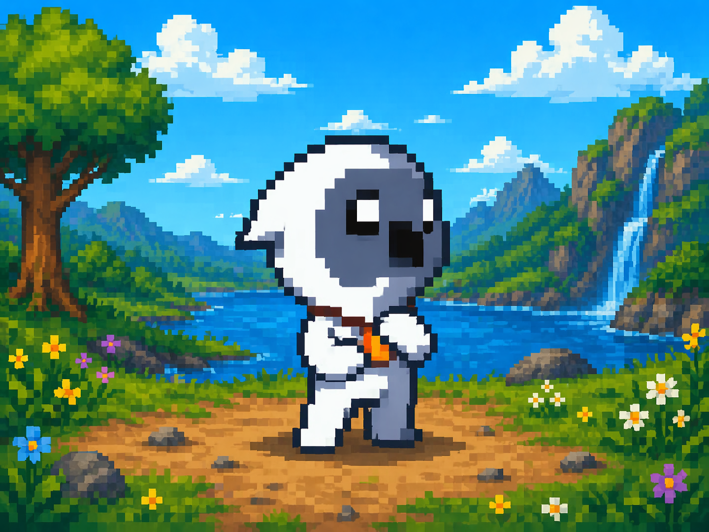
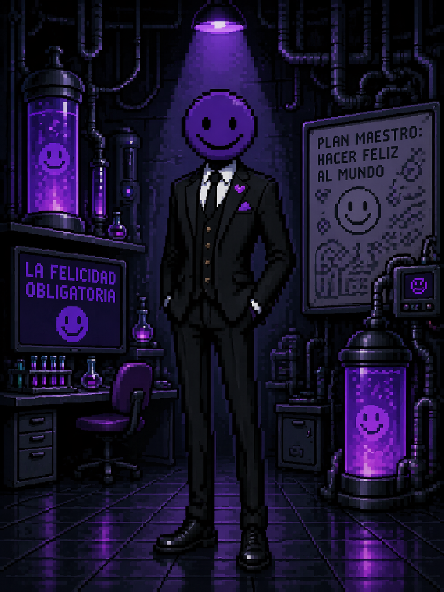

PERSONAJES DEL JUEGO
CONOCE A QUIENES HABITAN Y ROMPEN MIELÓPOLIS
Esta sección ya no funciona como una galería simple. Ahora presenta a los personajes como figuras clave del mundo, con una vista limpia para explorar y una lectura enfocada al abrir cada ficha.
FIGURA DESTACADA
SR. SONRISAS
Detrás de la estética tierna del reino existe una voluntad que empujó el proyecto de protección hacia algo irreconocible. Su presencia une la belleza, el juego y el peligro.
DIRECTORIO PRINCIPAL
PERSONAJES JUGABLES Y FIGURAS CLAVE
La vista principal se mantiene limpia. Haz clic en cualquier personaje para abrir una ficha detallada con su rol, tono narrativo y presencia dentro del universo del juego.

JUGABLE
Ruta ofensiva
BLUE
Uno de los personajes seleccionables. Su presencia abre una lectura más directa del conflicto y del viaje por el reino alterado.

JUGABLE
Ruta adaptable
ROSE
Explora el mismo reino roto desde otra sensibilidad. Su estilo convierte la travesía en una lectura distinta del caos.

JUGABLE
Ruta de descubrimiento
BUBLE
Su mirada permite descubrir otra capa del lore y de la resistencia frente a las consecuencias del proyecto fallido.

ANTAGONISTA
Origen de la fractura
SR. SONRISAS
La figura más inquietante del juego. Ayudó a la Reina a iniciar el proyecto, pero tras su muerte deformó su propósito hasta convertirlo en amenaza.
AMENAZAS DEL REINO
ENEMIGOS DEL VIDEOJUEGO
PROTECTORES CORROMPIDOS
Entidades nacidas del proyecto incompleto. Lo que debía servir al reino terminó convertido en amenaza persistente.
Se mueven como si todavía intentaran obedecer una orden.HORRORES DEL CIELO
Criaturas voladoras que contaminan incluso los lugares más luminosos del reino y vuelven inseguro aquello que antes era tierno.
Su silueta hace que el cielo parezca sonreír de forma incorrecta.“YO TAMBIÉN QUIERO QUE SEAN FELICES.”
— Sr. Sonrisas